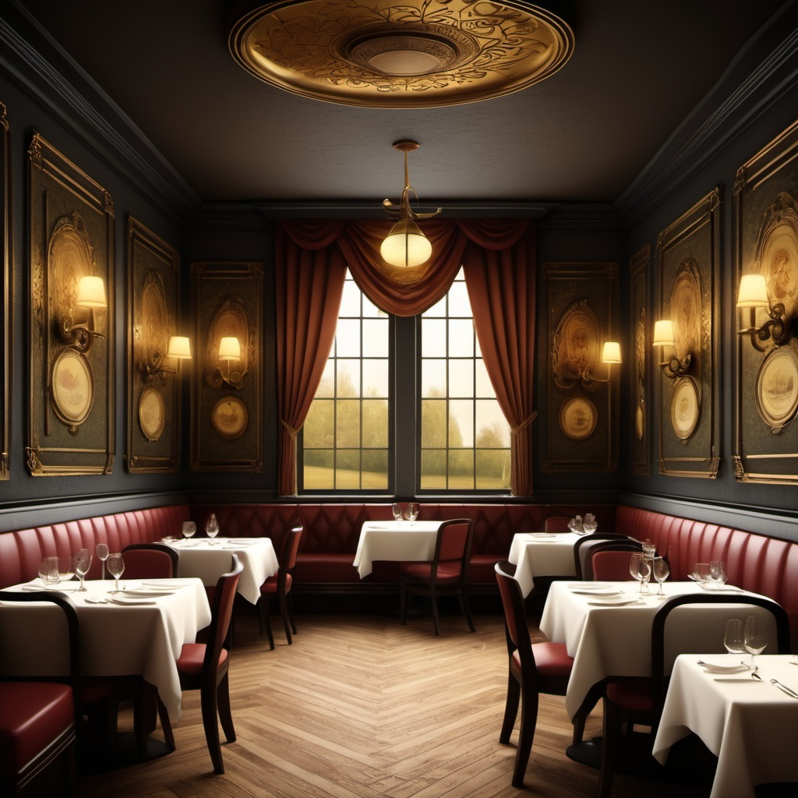

Where elegance meets comfort.

The Gilded Willow is a fine-dining restaurant that blends the mystique of an enchanted forest with a luxurious dining experience. Nestled in the heart of a bustling city, it offers a sanctuary for those seeking exquisite cuisine paired with an immersive ambiance. The restaurant prides itself on its farm-to-table philosophy, ensuring the freshest ingredients are used to craft dishes inspired by both traditional and contemporary culinary arts.